Using NfSen
Introduction
Goals
- Use NfSen to
- ensure NfSen is running by browsing on the page
- ensuring you can see the graphs with no errors indicated
- We will now see what type of traffic is passing through your group’s route
Assumptions
Your router is sending netflow records to your srvX, and that host is running NfSen to collect this data.
http://srvX.lab.shakya.io/nfsen/nfsen.php
Create a Stat to graph specific traffic
-
Open the NFSEN page and click on ‘live’ on the top right of the page and select “New Profile …”
- You may need to select several times as NfSen is picky.
-
Enter the name ‘HTTP_TRAFFIC’ for the profile name and additionally create a new group called “groupX” where X is your group number
-
Select individual channels and shadow profile.
-
Click “Create Profile” at the bottom of the menu.
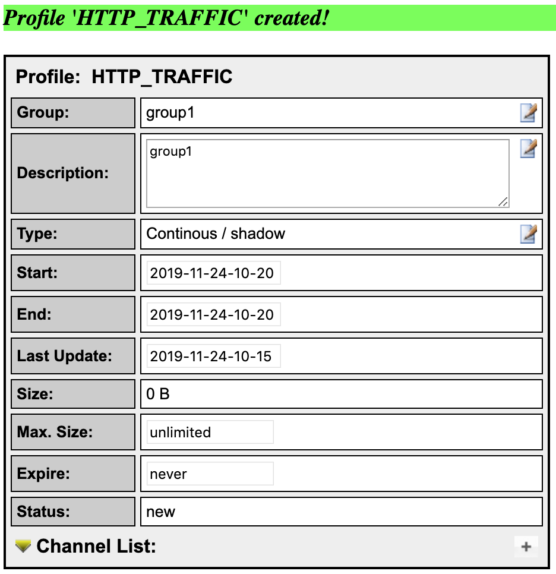
-
Click on the plus (+) sign next to ‘Channel List’ at the bottom of the page then fill the details as shown on the picture
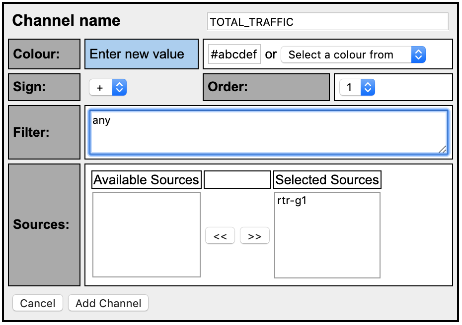
The filter “any” means ALL traffic. Select your sources in “Available Sources” and press the “>>” to add them to “Selected Sources.”
-
Click on ‘Add Channel’ at the bottom.
-
Again click on the plus (+) sign next to ‘Channel List’ at the bottom of the page then fill the details as shown on the picture
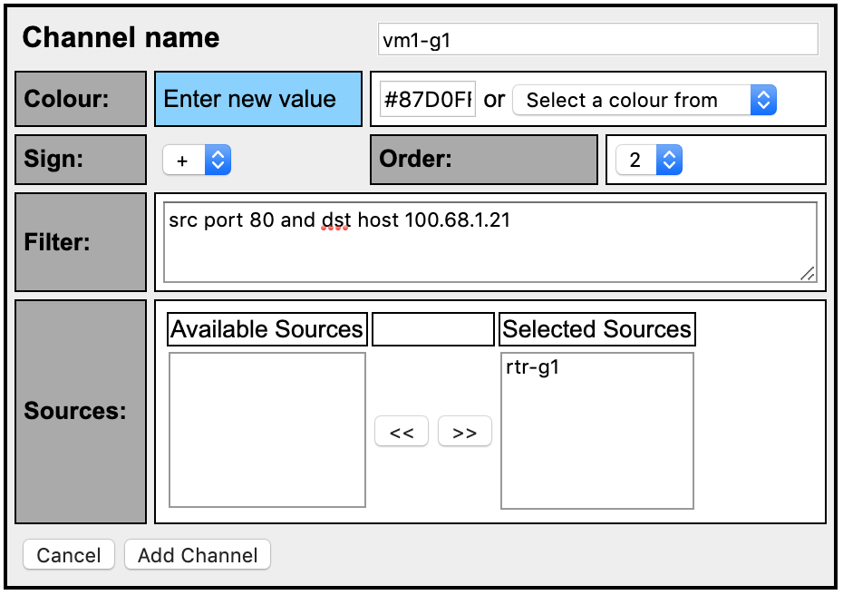
- Replace vmX-gY with a VM number in your group that is not yours. Also, replace the IP address in the Filter to match the IP of the VM in question. i.e 100.68.1.21 (vm1-g1), 100.68.6.22 (vm2-g6)
- Ensure you change the color. You can use the color picker or enter the value shown in this example
- Select your group’s routers as the source then click add channel. This will be the netflow exported from rtr1-gY
- With this, we will track how much HTTP traffic is going to that VM. That is how much is actually being downloaded. In a HTTP download, source traffic is always from port 80
-
Activate the profile
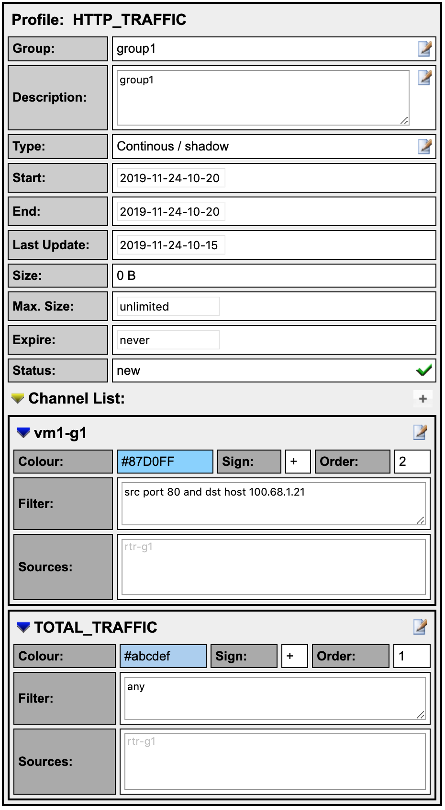
- Click the green tick to activate your new profile.
-
Click on Live then select the group you created and “HTTP_TRAFFIC” you will see your profile. Then click on the “Home” menu item on the upper left of the NfSen screen
Download HTTP data to vmX-gY
Log in on vmX-gY in your group and use the wget command to simulate an HTTP download.
lab@vm1-g1:~$ cd /tmp
lab@vm1-g1:~$ wget http://www.lab.shakya.io/downloads/BigFile
Once the download completes you can delete the file:
lab@vm1-g1:~$ rm /tmp/BigFile
lab@vm1-g1:~$ exit (to log off from vmX-gY)
See the traffic
Your graph will take up to 15 min to update. Go to Graphs then Traffic. Then go to details and select Line Graph at bottom
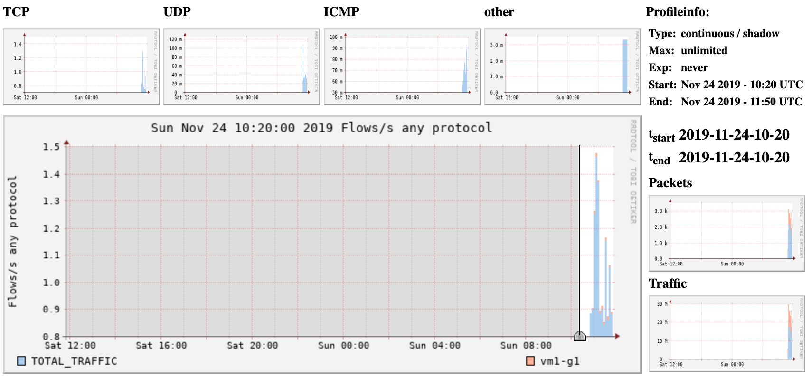
Stop! What’s happening here?
- The server www.lab.shakya.io is running a HTTP server. In a real network this could be any server on the Internet.
- vmX-gY is downloading a file over HTTP via rtr-gY and is the destination host aka ‘dst host’
- Router is exporting flows to the NFSEN Server and NFSEN graphs
- We have told NFSEN to graph traffic where the source port is 80 and the destination host is 100.68.X.Y. You can do the same thing back in your networks and additionally graph a specific web server with ‘src host a.b.c.d’ eg FaceBook’s IP
Extended Netflow processing
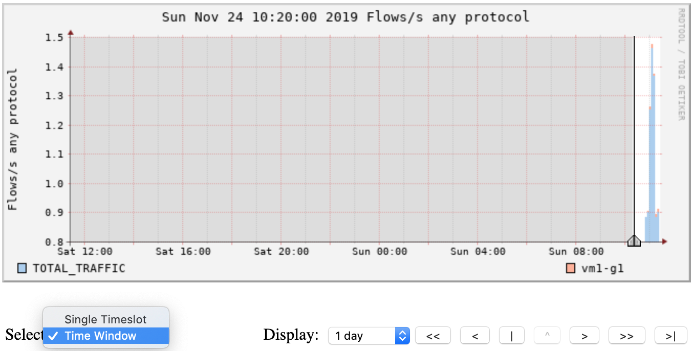
Go to Profile, select the group you created then select ‘HTTP_TRAFFIC’. Then go to the ‘Details’ tab and select ‘Time Window’ instead of ‘Time Slot’ beneath the graph. Choose a part of the graph with activity as above.
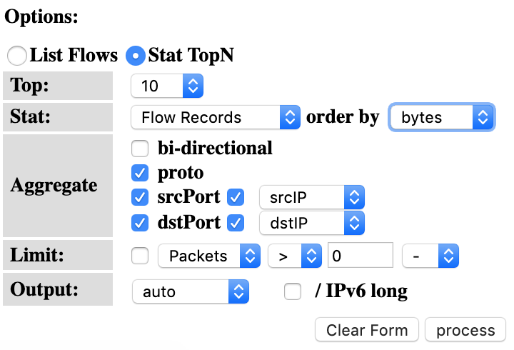
Select the options as on the left. This means, select the Top 10 Flows, Order them by bytes from the highest to the lowest and display information of the source and destination ports and IPs. Then select ‘Process’. Analyze the output you get which will look like the below screen.
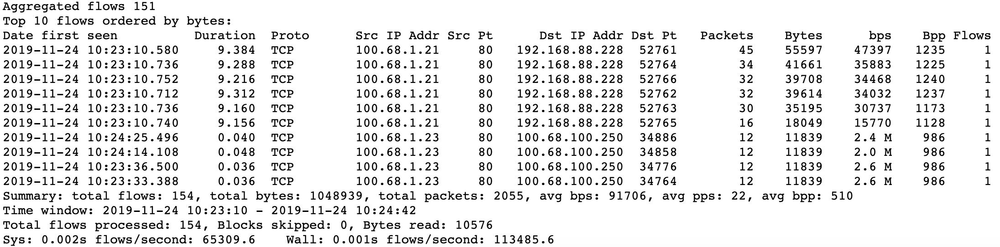
Try the same with the BiDirectional traffic option. What do you see? Try playing with the different options and see what output you get.
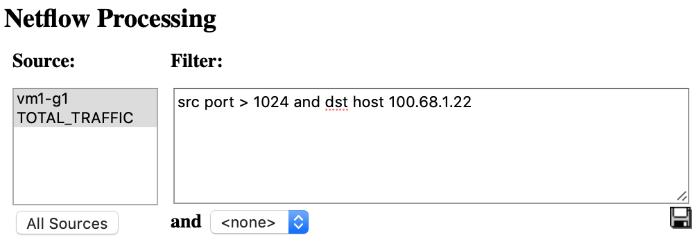
You can also add the same filters on the filter window next to the Options.
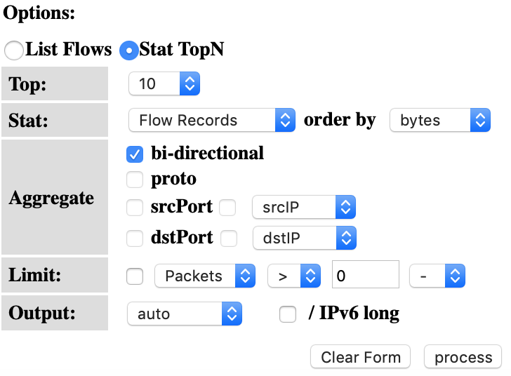
Try the following filters:
- src host 100.68.X.Y – meaning look for flows for this host
- src port 22 – meaning flows where the source port is 22
- src port 22 or src port 80 – meaning flows of either port 22 or 80
- src port 80 and in if 1 – meaning flows of src port 80 that passed via interface 1
- dst net 100.64.0.0/10 – meaning all flows where the destination network is 100.64.0.0/10
- src port > 5000 – meaning all flows where the source port is greater than 5000
Many more filters you could use
- If you want to see AS Number traffic for Google’s AS 15169
- You can do the same for anyone’s AS but your router should have the routing table installed and have ‘ip flow-export version 9 origin-as’ configured
- You can then graph each of them using a Stat as in the earlier exercise
- More filters here:
http://nfsen.sourceforge.net/#mozTocId652064
Monitor a specific host (ADDITIONAL/OPTIONAL)
- On the “Profile” menu in NfSen select “New Profile…”
- Profile: Troublesom_Users
- Group: groupX
- Channels: individual channels
- Type: Shadow Profile
- When done click on “Create Profile” at the bottom
- You will see a message “new profile created”
- Then click on the plus sign at the bottom to begin adding channels
- give channel name like vm1-g6
- Filter: host 100.68.6.21
(Replace 100.68.X.Y with the IP of your virtual machine)
- Sources: rtr1-g6
- Add a second channel and start to accept
- give channel name like vm1-g6
- Filter: dst host 100.68.6.22
- Sources: rtr1-g6
- Click on “Add Channel” and then click the green check mark to activate the "Troublesome_User”.
Filters
- Select a different color for the second channel so that the graphs can be distinguished
- Note that the two filters are different
- The first filter will capture any flows pertaining to host one pc
- The second filter will only capture flows where the host the second pc is the DESTINATION host.
- To generate traffic to see on graph details for this profile try transferring files from the first host to the second host.
- More attributes can be added here like src AS, dst AS, src ports etc based on the NfSen filter syntax
See trends over time
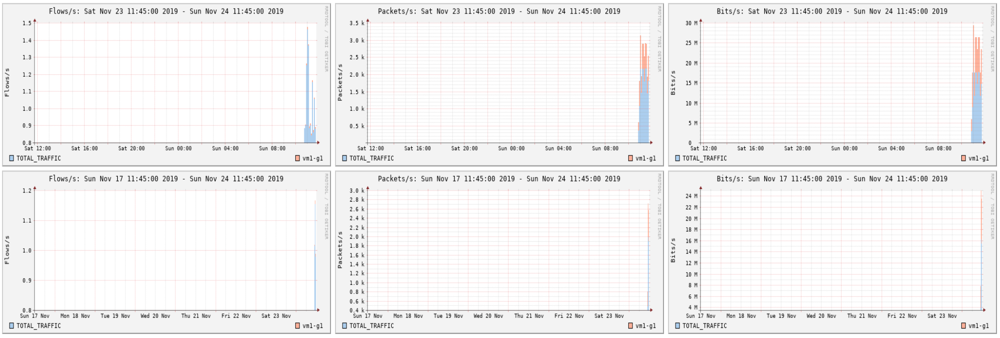